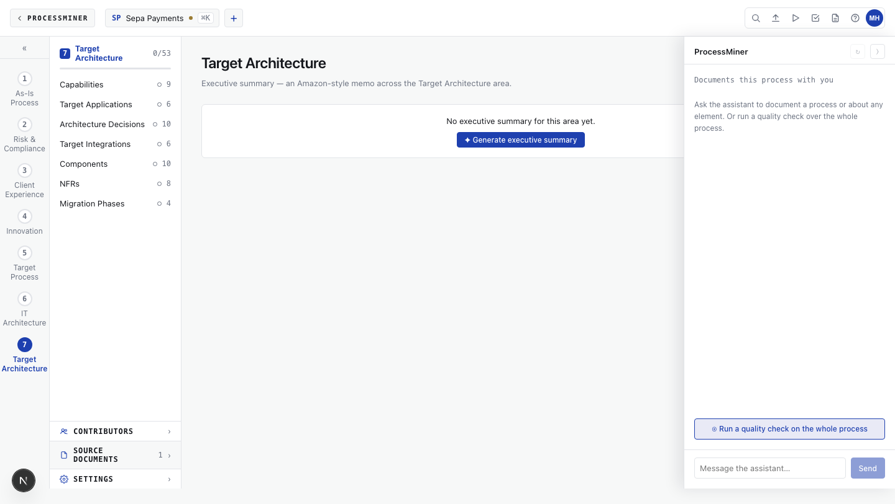

ProcessMiner documents what is. ArchitectMiner designs what should be.
One platform, two specialist modules. They share the same wiki, the same SME, and the same audit trail — but they answer different questions and serve different roles. A documented process flows from the first module straight into the second; nothing is re-keyed.
ProcessMiner
The business view — how the process runs today, and what it should look like.
Pairs the SME with an AI interviewer to document the process end-to-end across six perspectives, then develops the target state with the same SME — controls, regulations, customer experience, innovation, transformation.
Run by · process specialists, compliance officers, client-journey designers, innovation analysts, transformation leads.

ArchitectMiner
The IT view — the target architecture that will support the target process.
Takes the documented process and the target state, then develops a seven-section target architecture — capabilities, target applications, ADRs, integrations, components, NFRs and the migration phases to get there.
Run by · domain architects, solution architects, enterprise architects.
